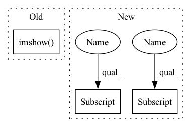

Pattern ID :39978
Before Change
Plot the time series.
if show_matrix:
plt.imshow( self.forward_weights, cmap="RdBu_r")
plt.colorbar()
plt.show()
timeseries = self.compute_ws()
time = np.linspace(0, self.n_steps * self.dt, self.n_steps)After Change
fig, axes = plt.subplots(1, 2, figsize=(15, 5))
timeseries = self.compute_ws()
self.raster_plot(axes[0])
axes[0] .set_xlabel("Time [ms]")
axes[0].set_ylabel("Neurons [-]")
axes[0].set_title(f"{self.spikes_transform.spikes_layer_type.__name__}: Raster plot $t_0$")
axes[1].plot(self.t_space_ms, timeseries)
axes[1].set_title("Wilson-Cowan Time series")
axes[1] .set_xlabel("Time [ms]")
axes[1].set_ylabel("Neuronal activity [-]")
axes[1].set_ylim([0, 1])
if show:In pattern: SUPERPATTERN
Frequency: 3
Non-data size: 3
Instances Fragment ID: 113710287
Project Name: neurotorch/neurotorch
Commit Name: 6212a789c98d8f2102983964329d9058339d5272
Time: 2022-08-02
Author: 50332514+JeremieGince@users.noreply.github.com
File Name: applications/fit_wilson_cowan_with_lif/dataset.py
M Class Name: WilsonCowanTimeSeries
N Class Name: WilsonCowanTimeSeries
M Method Name: plot_timeseries(4)
N Method Name: plot_timeseries(2)
M Parent Class: Dataset
N Parent Class: Dataset
M File Name: applications/fit_wilson_cowan_with_lif/dataset.py
N File Name: applications/fit_wilson_cowan_with_lif/dataset.py
M Start Line: 80
M End Line: 94
N Start Line: 81
N End Line: 99
Before Change
(bottom_line[-1, 0], bottom_line[-1, 1]),
(255, 255, 255), 2, **CV2_SUB_VALUES)
cv2.imshow( "debug", image)
cv2.waitKey(0)
return imageAfter Change
drawed image.
for lane_area in lane_area_list:
up_line = lane_area[0]
bottom_line = lane_area[1]
cv2.line(image, (up_line[0, 0], up_line[0, 1]),
(up_line[-1, 0], up_line[-1, 1]),
(255, 255, 255), 2, **CV2_SUB_VALUES)
cv2.line(image, (bottom_line[0, 0], bottom_line[0, 1]),
(bottom_line[-1, 0], bottom_line[-1, 1]),
(255, 255, 255), 2, **CV2_SUB_VALUES)
cv2.line(image, (up_line[0, 0] , up_line[0, 1]),
(bottom_line[-1, 0], bottom_line[-1, 1]),
(255, 255, 255), 2, **CV2_SUB_VALUES)
cv2.line(image, (up_line[-1, 0], up_line[-1, 1] ),
(bottom_line[0, 0], bottom_line[0, 1]),
(255, 255, 255), 2, **CV2_SUB_VALUES)
Fragment ID: 113710295
Project Name: derrickxunu/opencood
Commit Name: 899040d396ef39c925ed7269ff5d6621c489d824
Time: 2022-06-02
Author: derrickxu1994@gmail.com
File Name: logreplay/map/map_drawing.py
M Class Name: AnonimousClass
N Class Name: AnonimousClass
M Method Name: draw_crosswalks(2)
N Method Name: draw_crosswalks(2)
M Parent Class:
N Parent Class:
M File Name: logreplay/map/map_drawing.py
N File Name: logreplay/map/map_drawing.py
M Start Line: 186
M End Line: 187
N Start Line: 176
N End Line: 190
Before Change
plt.title("P2P error")
p2p_img = convert_plt_to_tensor()
plt.imshow( radar, cmap="gray")
plt.scatter(src[ids_cpu, 0], src[ids_cpu, 1], c=mah[ids_cpu].detach().cpu().numpy(), s=5, zorder=2, cmap="rainbow")
plt.colorbar()
plt.title("MAH")
mah_img = convert_plt_to_tensor()After Change
match_img2 = convert_plt_to_tensor()
// Draw scores
scores = out["scores"][-1]
if scores.size(0) == 3:
scores = scores[1] + scores[2]
scores = scores.squeeze().detach().cpu().numpy()
plt.imshow(scores, cmap="inferno")
plt.colorbar()
plt.title("log det weight (weight score vis)") Fragment ID: 113710327
Project Name: utiasasrl/hero_radar_odometry
Commit Name: c1043c84c77f1a20b667d981d4cd286cb378c71a
Time: 2021-01-25
Author: david.yoon@robotics.utias.utoronto.ca
File Name: utils/vis.py
M Class Name: AnonimousClass
N Class Name: AnonimousClass
M Method Name: draw_batch_steam(3)
N Method Name: draw_batch_steam(3)
M Parent Class:
N Parent Class:
M File Name: utils/vis.py
N File Name: utils/vis.py
M Start Line: 55
M End Line: 134
N Start Line: 95
N End Line: 122
Before Change
Plot the time series.
if show_matrix:
plt.imshow( self.forward_weights, cmap="RdBu_r")
plt.colorbar()
plt.show()
timeseries = self.compute_ws()
time = np.linspace(0, self.n_steps * self.dt, self.n_steps)After Change
if fig is None or axes is None:
fig, axes = plt.subplots(1, 2, figsize=(15, 5))
timeseries = self.compute_ws()
self.raster_plot(axes[0] )
axes[0].set_xlabel("Time [ms]")
axes[0].set_ylabel("Neurons [-]")
axes[0].set_title(f"{self.spikes_transform.spikes_layer_type.__name__}: Raster plot $t_0$")
axes[1].plot(self.t_space_ms, timeseries)
axes[1].set_title("Wilson-Cowan Time series")
axes[1] .set_xlabel("Time [ms]")
axes[1].set_ylabel("Neuronal activity [-]")
axes[1].set_ylim([0, 1])
if show: Fragment ID: 113710286
Project Name: neurotorch/neurotorch
Commit Name: 6212a789c98d8f2102983964329d9058339d5272
Time: 2022-08-02
Author: 50332514+JeremieGince@users.noreply.github.com
File Name: applications/fit_wilson_cowan_with_lif/dataset.py
M Class Name: WilsonCowanTimeSeries
N Class Name: WilsonCowanTimeSeries
M Method Name: plot_timeseries(4)
N Method Name: plot_timeseries(2)
M Parent Class: Dataset
N Parent Class: Dataset
M File Name: applications/fit_wilson_cowan_with_lif/dataset.py
N File Name: applications/fit_wilson_cowan_with_lif/dataset.py
M Start Line: 80
M End Line: 94
N Start Line: 81
N End Line: 99